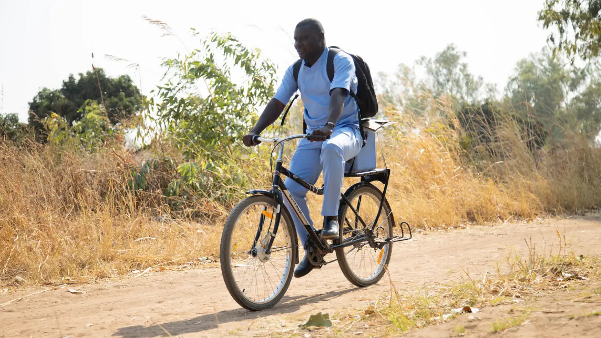
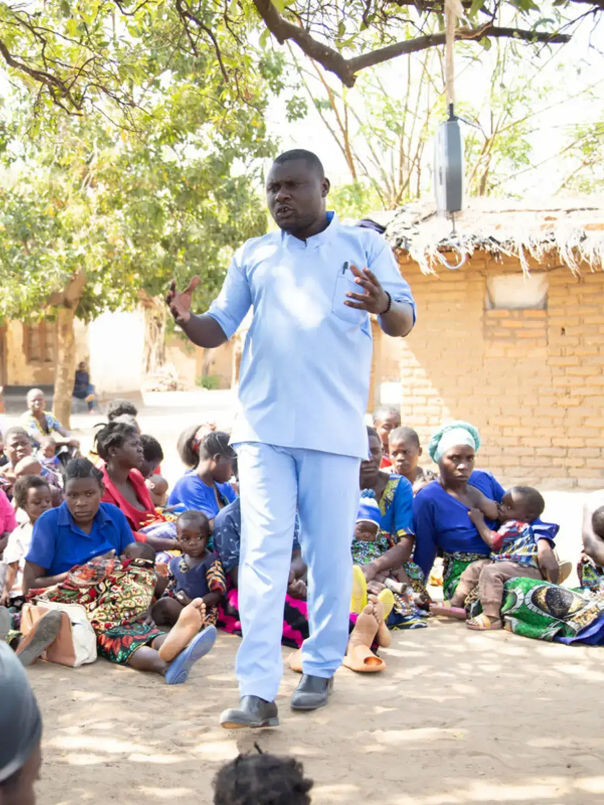
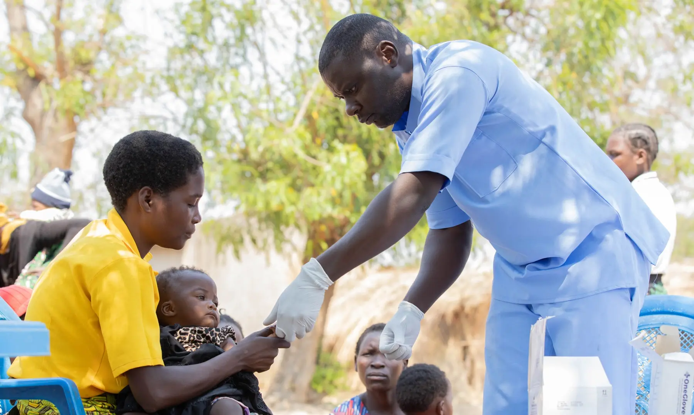
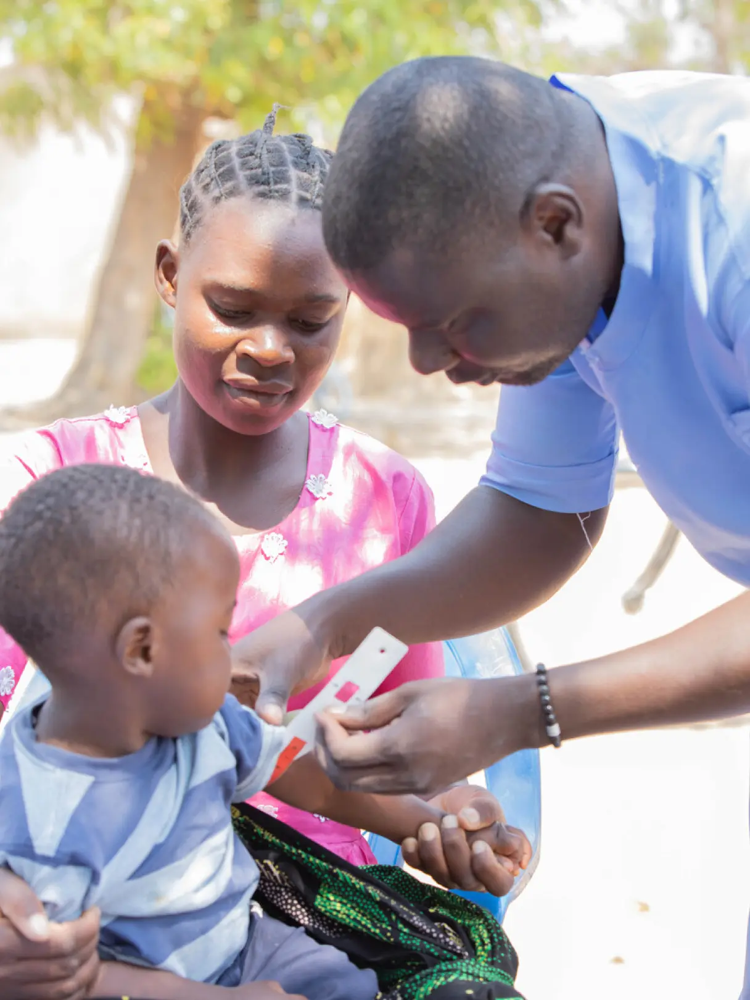
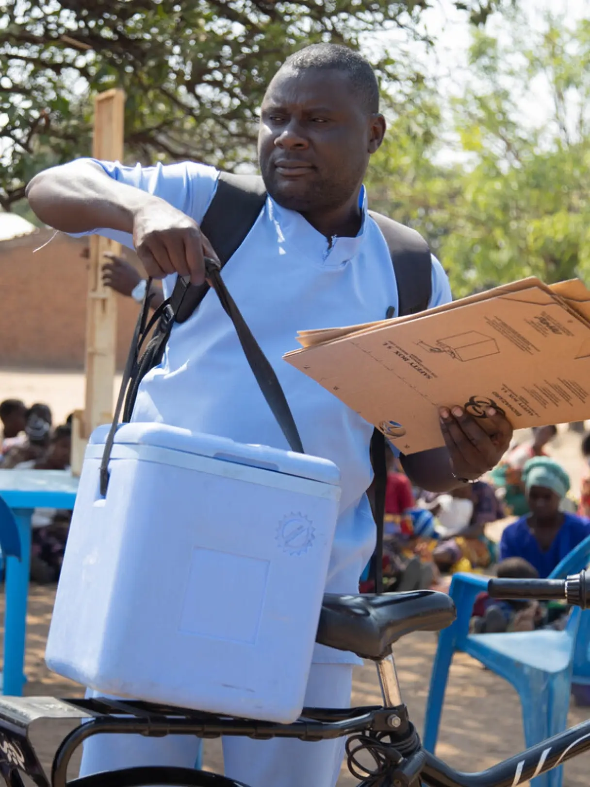
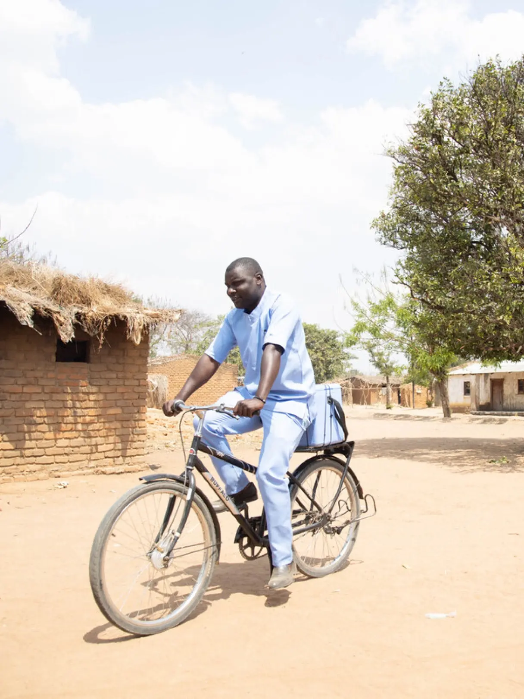
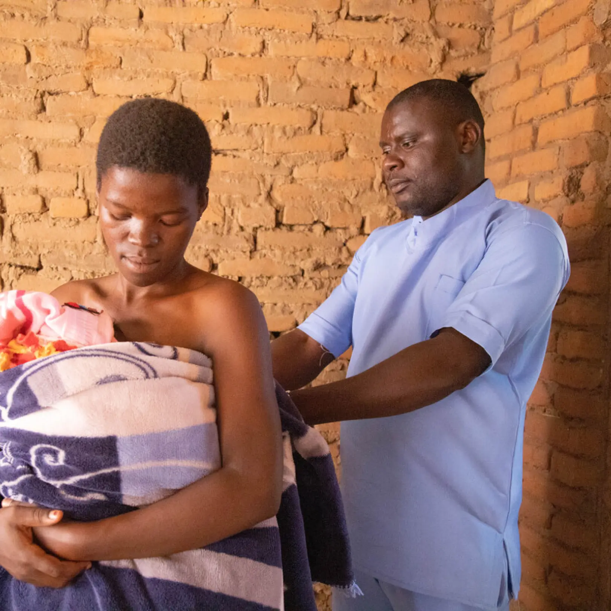
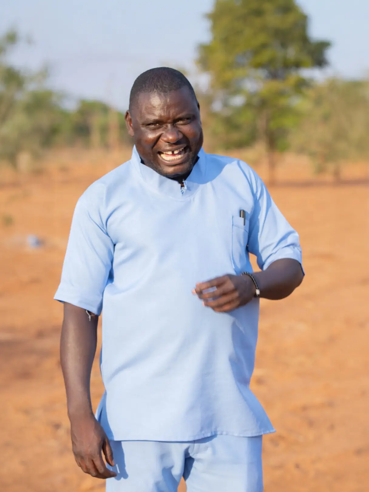
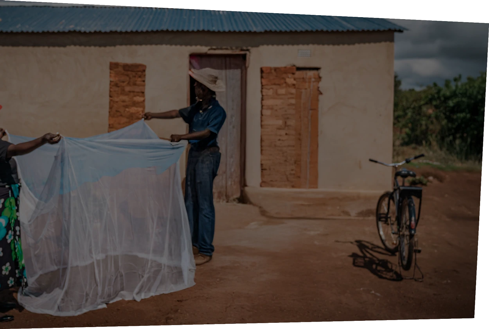
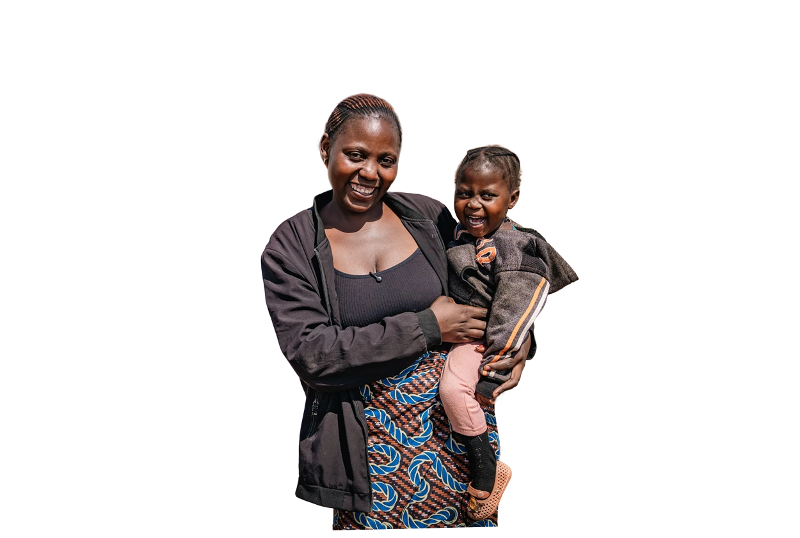

Preview footage from the 2025 impact stories

Fanizo's Story
Community health worker, Katenje, Kasungu, Malawi
In Katenje, a village in Kasungu District, central Malawi, Fanizo Simenti cycles through the cool morning.
Simenti is among Community Health Workers trained by Amref Health Africa in Malawi as skilled healthcare workers to deliver key health services at the community level.

"I do this several times a week. I take the vaccines in the morning to the outreaches and bring them back (to health centre) in the evening," the Community Health Worker explains. Simenti’s responsibilities are wide-ranging. Known locally as the “village doctor,” he provides preventive and curative services for the under-fives, including care for malaria, pneumonia, diarrhoea, and other preventable diseases. He vaccinates children to protect them from deadly diseases. He also monitors growth and nutrition status, giving parents vital education on how to keep their children healthy.
Under a huge lemon tree in Katenje, Simenti will deliver an outreach clinic, serving mothers and babies with these essential health services. “This is our monthly outreach clinic,” he explains “We have about 21 outreach sites across this district, each with its own scheduled day.” In Malawi, 83% of the population of 19 million lives in rural areas, with extremely limited access to doctors and nurses. For many rural families, Community Health Workers like Simenti offer the only hope for urgent care, health education, and preventive services. Simenti is originally from the capital Lilongwe. He dreamed of becoming a teacher but he discovered a far greater need for community health workers.
“A health worker must have integrity and love for the job and for the people,” Simenti explains. “And you need good communication skills so the community can understand you and you can understand them. Without that, you can’t deliver.”

“People here are poor. Even a short journey can be impossible if you don’t have money for transportation.”
Communities in Malawi face recurring outbreaks of typhoid fever, measles, COVID-19, and yearly cholera. All these illnesses are preventable with the right health behaviours and vaccines, but that only works if health information and vaccines can reach the people who need them most. Trained Community Health Workers are trusted messengers deliver them and save lives.
In one tragic case, he recalls, a mother who lost her child before they could reach the hospital. “Yes, we had a woman [who] because of the distance to get medication, she lost her child. They tried to go to the hospital, but they couldn’t afford fast transport. By the time they got there, the doctor said the child had already died.”
When a trained CHW is nearby, they can diagnose an illness early and administer lifesaving treatment. But CHWs face many challenges in delivering care. “In my outreach, there’s no shelter,” Simenti explains. “We sit under a tree and provide services. During the rainy season, we can’t do that, so we have to cancel. That means people go without care for days or weeks.” When the budget cut to foreign aid were announced in 2025, the funding for these outreach clinics was stopped—almost overnight.

“I have a vital role which mediates the health centre and the community,”
Simenti explains. “We take services close to the community like we do preventive services vaccinations and treat under-five children with selected diseases. We are bringing essential health services close to the family.” Without the funding to provide these clinics, Simenti uses his Amref-supported training to help his community where he can, but his reach is limited.
Outreach clinics delivered integrated family health services to nearly 500,000 people. This includes antenatal care for nearly 30,000 women and immunisations for 70,000 children below the age of five.



Simenti was serving more than 4,300 people, a huge number for just one frontline worker. The government target is one CHW to 500 people.

Simenti is now supporting the community’s crowdfunding drive to build their own health post at Katenje. It is the halfway point between two health centres more than 30km away in either direction. With a permanent facility, and refrigeration, Simenti could deliver services year-round and ensues that the community’s children were fully vaccinated.
As he cycles back, after a long day at the outreach, he’s greeted by familiar faces of farmers who are ambling home with bicycles and children racing through the last shards of daylight. “It’s very tiring,” he admits, “but because we love the job, we continue.”
Tomorrow is his rest day.
Then it’s back on the bicycle to another outreach, another village, another set of lives that might depend on him and his work.
Yes, I love the community, When I call a meeting to discuss health issues, people come.
All images © Amref Health Africa/Chimwemwe Nkhata


Beyondthe Stories
We believe that health is a human right and the key to a brighter future.
About Amref